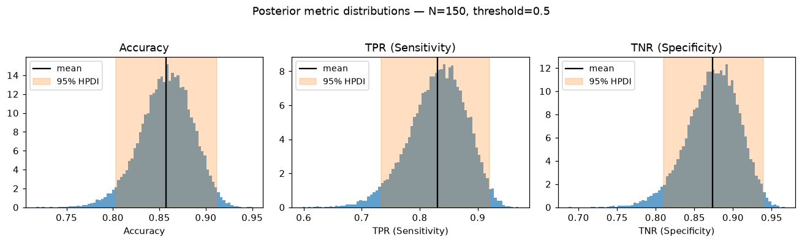
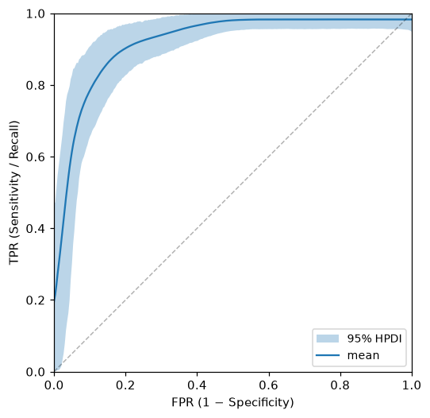
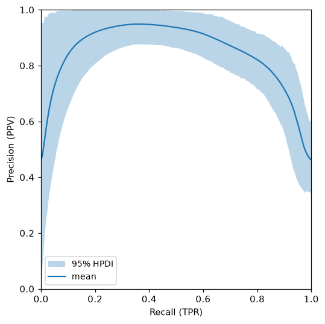
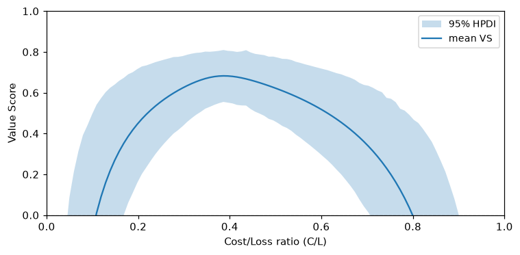
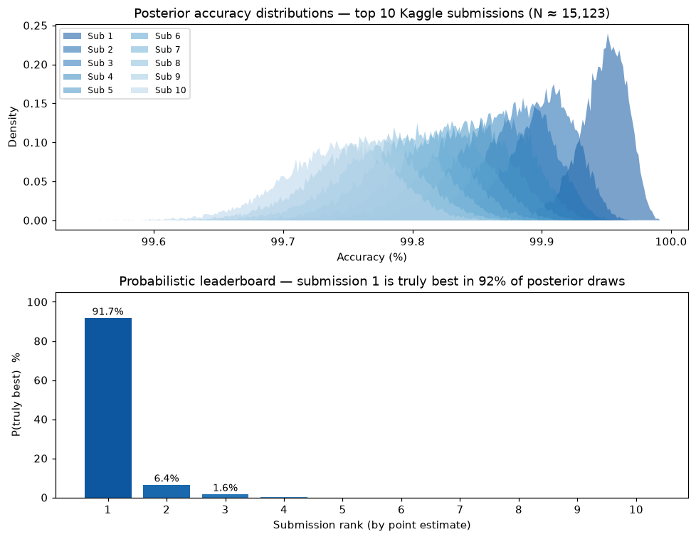
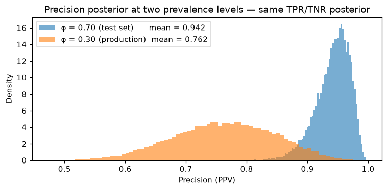
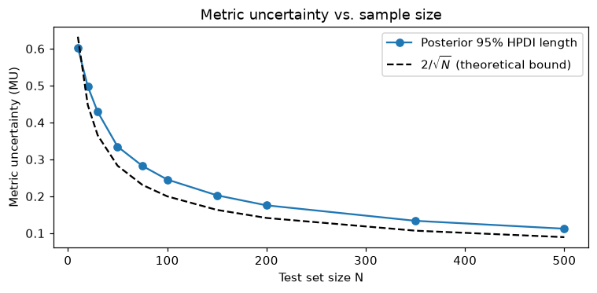

Examples
All examples use a synthetic binary classification dataset with N=150, prevalence ≈ 40%, and a moderately good classifier (AUC ≈ 0.85):
import numpy as np
from classifier_uncertainty import BinaryClassifier
rng = np.random.default_rng(42)
n = 150
y_true = (rng.uniform(0, 1, n) < 0.40).astype(bool)
y_score = np.where(y_true, rng.beta(5, 2, n), rng.beta(2, 5, n))
bc = BinaryClassifier(y_true, y_score, seed=42)
From a published confusion matrix
If you only have confusion matrix counts — common when evaluating classifiers from
published papers — use from_cm. No raw predictions needed.
# Classifier 7a from Tötsch & Hoffmann (2020): N=34, all 26 positives correctly classified
bc_paper = BinaryClassifier.from_cm(tp=26, fn=0, tn=6, fp=2)
result = bc_paper.at_threshold().tpr()
print(f"TPR point estimate: {result.point_estimate:.3f}") # ≈ 0.963
print(f"95% credible interval: {result.credible_interval()}") # ≈ (0.891, 0.999)
print(f"Metric uncertainty: {result.metric_uncertainty:.3f}") # ≈ 0.108
The 95% credible interval spans 89%–100% — strikingly wide for a classifier with zero false negatives, because N=34 is very small. The point estimate of 100% is impossible to achieve in any finite test set; the posterior correctly reflects this.
Threshold metrics
At a fixed decision threshold, all metrics share the same posterior CM samples, so their correlations are preserved.
t = bc.at_threshold(0.5)
t.accuracy()
t.tpr() # sensitivity / recall
t.tnr() # specificity
t.precision() # ppv
t.npv()
t.f1()
t.balanced_accuracy()
t.bookmaker_informedness()
t.mcc()
Each method returns a MetricResult. Calling .plot() on any of them renders the
posterior histogram with HPDI shading:
t.tpr().plot()
t.tnr().plot()
t.accuracy().plot()

The orange band is the 95% highest posterior density interval (HPDI); its length
is result.metric_uncertainty.
Custom metrics
Pass any function of the CM proportions to .metric():
# False discovery rate: FP / (TP + FP)
fdr = t.metric(lambda tp, fn, tn, fp: fp / (tp + fp))
fdr.credible_interval()
The proportions tp, fn, tn, fp are numpy arrays (one value per posterior
sample) summing to ~1 per row, so standard ratio metrics work without rescaling.
ROC and Precision-Recall curves
Both curve methods sweep a quantile-spaced threshold grid. At each threshold, the joint posterior distribution over the two curve axes is visualised as an uncertainty band at the chosen confidence level (default 95%).
roc = bc.roc_curve(n_thresholds=30)
roc.plot()
# AUC as a full posterior distribution
print(f"AUC mean: {roc.auc.point_estimate:.3f}")
print(f"AUC 95% CI: {roc.auc.credible_interval()}")

pr = bc.pr_curve(n_thresholds=30)
pr.plot()
print(f"AP mean: {pr.auc.point_estimate:.3f}")

Economic value
Mean expense
Mean expense is the raw expected cost per observation under a cost/loss decision framework. Protective actions (TP and FP) each incur cost C; missed events (FN) incur loss L; correct negatives (TN) have no cost:
expense = t.mean_expense(cost=1.0, loss=5.0)
expense.point_estimate # expected cost per observation
expense.credible_interval() # 95% HPDI
Relative Value Score
The Value Score (Wilks 2001) measures improvement over the naive climatological strategy, normalised so VS = 1 for perfect forecasts and VS = 0 for no skill. It depends only on the cost/loss ratio C/L ∈ (0, 1):
- C: cost of a protective action (paid for both TP and FP)
- L: loss when the event occurs without protection
- VS = 1: perfect; VS = 0: no better than climatology; VS < 0: harmful
# VS at a specific C/L — returns a MetricResult like any other metric
t.relative_value(cost_loss_ratio=0.3)
# VS curve over all C/L values — plot the full uncertainty band
t.value_score_curve(n_cl=100).plot()

The shaded region is the 95% posterior credible band. VS = 0 marks the point where the classifier stops adding economic value. The formula selects between two regimes per posterior sample based on whether C/L is above or below the sampled prevalence, so the uncertainty in prevalence is propagated correctly into VS.
Probabilistic ranking of competing classifiers
Tötsch & Hoffmann (2020, §2D) applied Bayesian accuracy posteriors to the Recursion Cellular Image Classification Kaggle competition. With ~15,000 private test images and submissions separated by fractions of a percent, the apparent ranking may be unreliable.
For a single accuracy value, the posterior is exactly Beta(correct + 1, incorrect + 1) — the conjugate posterior with a Laplace prior. This needs no confusion matrix; sample directly:
import numpy as np
N = 15_123 # estimated private leaderboard size
# Published point-estimate accuracies for the top 10 submissions
point_estimates = [0.99954, 0.99907, 0.99887, 0.99867, 0.99847,
0.99827, 0.99807, 0.99787, 0.99767, 0.99747]
rng = np.random.default_rng(42)
acc_samples = np.array([
rng.beta(round(N * acc) + 1, N - round(N * acc) + 1, 20_000)
for acc in point_estimates
]) # shape: (10, 20_000)
# For each of the 20,000 posterior draws, rank all submissions
rank_per_sample = np.argsort(np.argsort(-acc_samples, axis=0), axis=0)
p_best = (rank_per_sample == 0).mean(axis=1)
print(f"P(submission 1 is truly the best): {p_best[0]:.1%}") # → 91.7%
print(f"P(submission 2 is truly the best): {p_best[1]:.1%}") # → 6.4%
The distributions overlap enough that the winner holds the top spot in only ~92% of posterior draws, and the runner-up has a meaningful ~6% chance of being the better classifier.

For metrics other than accuracy, or when you only have a confusion matrix,
use BinaryClassifier.from_cm and call the appropriate metric method on each
classifier, then compare samples the same way:
from classifier_uncertainty import BinaryClassifier
# Any metric — here F1, from confusion matrix counts
f1_a = BinaryClassifier.from_cm(tp=80, fn=20, tn=90, fp=10).at_threshold().f1()
f1_b = BinaryClassifier.from_cm(tp=75, fn=25, tn=95, fp=5).at_threshold().f1()
print(f"P(A has higher F1): {(f1_a.samples > f1_b.samples).mean():.1%}")
Prevalence exchange
Test sets for medical classifiers are often designed with an elevated disease prevalence to ensure enough positive examples — but the classifier will be deployed in a general population where prevalence is much lower. Because TPR and TNR are sampled independently of φ, you can swap in any prevalence and the class-conditional posteriors carry through unchanged.
# Test set designed with 70% disease prevalence
bc_med = BinaryClassifier.from_cm(tp=63, fn=7, tn=27, fp=3, seed=0)
t_med = bc_med.at_threshold()
prec_70 = t_med.precision() # observed test-set prevalence
prec_30 = t_med.at_prevalence(0.30).precision() # projected to production
print(f"Precision at φ=0.70: {prec_70.point_estimate:.3f}") # ≈ 0.955
print(f"Precision at φ=0.30: {prec_30.point_estimate:.3f}") # ≈ 0.794
The posteriors can be plotted on the same axes to visualise the shift and its uncertainty:

The TPR and TNR samples are identical between the two distributions — only the prevalence differs. The full width of each band reflects uncertainty in the class-conditional rates (TPR, TNR), not in φ.
To encode uncertainty about the production prevalence, pass a Beta prior instead:
# Beta(3, 7) → mean φ ≈ 0.30 with uncertainty
prec_uncertain = t_med.at_prevalence((3, 7), seed=0).precision()
Metric uncertainty and sample size
Metric uncertainty (MU, the 95% HPDI length) decreases with test set size N and is approximated by 2/√N (Tötsch & Hoffmann eq. 15).
# Compute MU for TPR across a range of N
for n in [10, 30, 100, 300, 1000]:
bc_n = BinaryClassifier.from_cm(
tp=round(n * 0.35), fn=round(n * 0.15),
tn=round(n * 0.35), fp=round(n * 0.15),
)
mu = bc_n.at_threshold().tpr().metric_uncertainty
print(f"N={n:4d}: MU={mu:.3f} (bound: {2/n**0.5:.3f})")

Sample size rule of thumb: to achieve MU ≤ δ, you need at least N ≥ (2/δ)² test samples. For MU ≤ 10 percentage points: N ≥ 400. For MU ≤ 5 percentage points: N ≥ 1600.